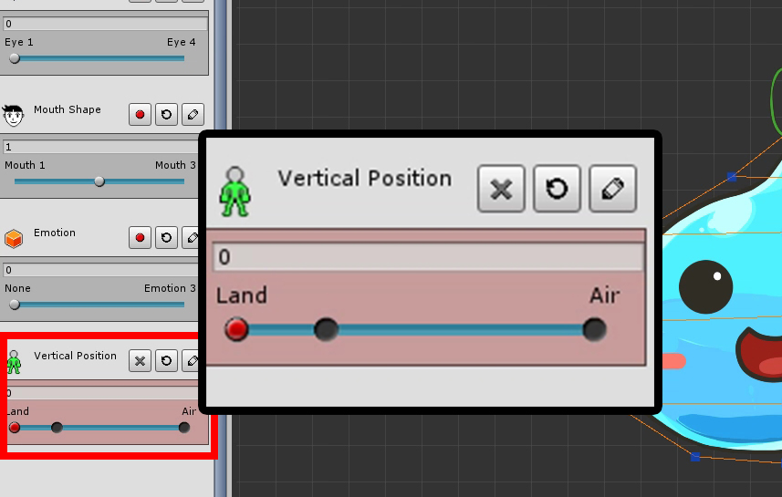
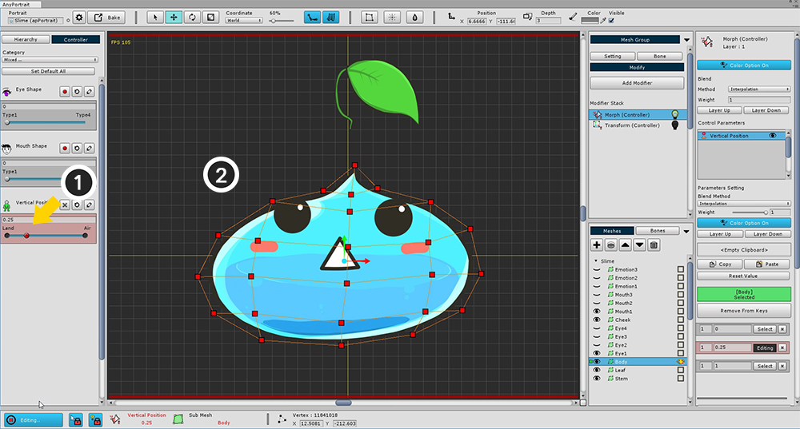

AnyPortrait > 入門ガイド > 1.7. 「Morph Modifier」を使う
1.7. 「Morph Modifier」を使う
1.0.0
「Morph」モディファイア(Modifier)は、頂点を直接変形する機能を提供します。
「Transform」モディファイアよりも正確な作業を行うことができます。
主にイラストの見た目を調整してかさばるか活気を感じさせるために使用されます。
このページには、「Morph」モディファイアを追加することによる基本的な変換プロセスが含まれています。
頂点を編集するためのツールを表示するには、次のページに進みます。

(1) 「Add Modifier」ボタンを押し、(2) 「Morph (Controller)」モディファイアを選択して追加します。

Morphモディファイアの作業画面は、Transformモディファイアの作業画面とほとんど変わりません。
(1) Morph (Controller)モディファイアを選択し、(2) 「Body」メッシュを選択します。
そして、（3） 「Vertical Position」パラメータの記録ボタンを押します。

先に学んだように、制御パラメータにキーを追加します。
「Vertical Position」パラメータの右側は「空気中に浮かぶスライム」を意味し、左側は「スライムが地面にある」ことを意味する。
各パラメータの "0"、 "0.25"、 "1"の位置にキーを追加します。

Morphを適用するには、頂点を選択して編集の準備をする必要があります。
現在、頂点を選択したり、頂点を編集することはできません。
これは、「編集モード(Editing Mode)」でのみ編集が可能なためです。
編集するには、(1) 対象の 「body」メッシュが登録されていることを確認し、
(2) 「Start Editing」ボタンを押して 「編集モード」を作成します。
(ボタンをもう一度押すと、「編集モード」が解除されます)。

画面の下部には、「編集モード」に関連するUIがあります。
1. 編集ボタン : 「編集モード」のオン/オフを切り替えるボタンです。 編集が不可能な場合は、自動的にオフになります。 ショートカットは「 A 」です。
2. 選択ロック(Selection Lock) : 有効になっている場合、ワークスペース上の他のメッシュやボーンを選択することはできません。 ショートカットは「 S 」です。
3. モディファイアロック(Modifier Lock) : アクティブになっている場合は、動作中のモディファイアのみが計算され、残りはオフになります。 一方、オフの場合、計算は「非衝突モディファイア」に対してのみ行われます。 ショートカットは「 D 」です。
4. 選択された入力値 : 現在の入力値として選択された制御パラメータおよびキー値。 ターゲットはモディファイアによって変わることがあります。
5. 選択されたオブジェクト : 処理されるオブジェクト。 これは「Body」メッシュです。さて、頂点を修正して、 「Morph」を使ってみましょう。

(1) スライダを「空中」のキーに移動した後、(2) マウスをドラッグしてすべての頂点を選択します。

「移動」ツール（ショートカット W ）を使用して頂点を上に移動します。

(1) 値が0.25のキーにスライダを移動し、(2) 「薄いスライム」を作成します。
「移動」ツールと「スケール」ツールを使用して簡単に作成できます。
上記の手順をすべて完了した場合は、以下のムービークリップのようにスライダを移動するたびに「スライム」が上下に移動します。

このサンプルでは、Morphモディファイアは色を制御しません。
色をコントロールしない場合は、他のモディファイアとの競合を避けるため、設定の「Color Option」をオフにします。
(1) 上記の画像のように「Color Option」ボタンを押してオフにします。
「Blend Method」を「Interpolation」から (2) 「Additive」に変更します。
複数のモディファイアをマージしている場合、通常はAdditiveメソッドを使用します。
Interpolationメソッドを選択した場合、値は上書きされるため、特殊な場合にのみ値を使用してください。